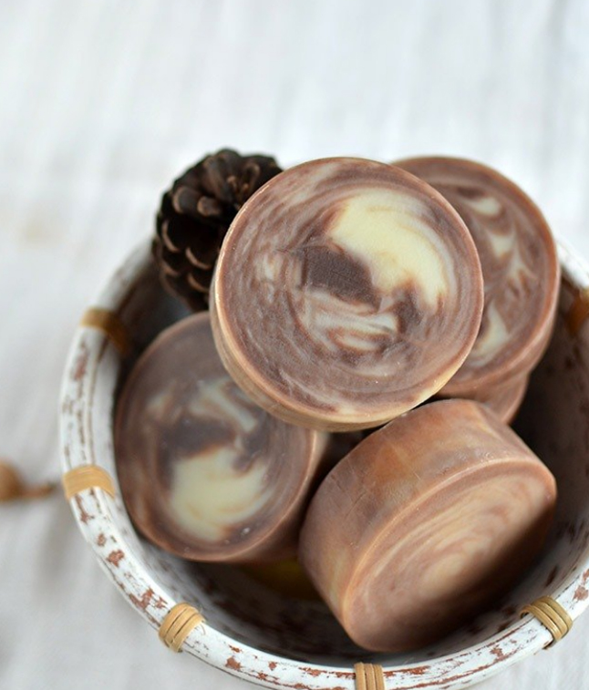

森林洗髮皂 冷製手工皂
保養頭皮 何首烏 迷迭香雪松
森林洗髮皂
冷壓苦茶油/茶花油、蓖麻油、橄欖油等養護頭髮經典用油，搭配漢方何首烏，以及藥草療癒芬芳的複方精油。輕鬆搓出天然的綿密的泡沫，徹底洗淨頭皮與髮絲。
有流動的樹幹紋路，
香味是森林的空氣感，
用於洗髮，按摩頭皮，
讓精油香氣與您一同散步、淋浴，
頭髮專屬的冷製手工皂，
澎鬆並且如森林大樹一般更堅強的髮絲，來感受一下吧～
★製作成份：
橄欖油, 冷壓苦茶油, 冷壓荷荷芭油, 椰子油, 蓖麻油, 棕櫚油。純水,氫氧化鈉。清新的迷迭香,雪松複方植物精油。何首烏。
★用法：清潔頭皮與髮絲。中性髮質適用。
偏油肌膚可全身沐浴，全方位手工皂！
★熟成重量：100~105g 此批次切得較大呦！
每一個手作皂需經過6~8週熟成時間，水份散去使肥皂更為緊實，這裡標示的是已經縮水過後的熟成重量。


JL House 的手工皂皆為出自設計工作室之原創商品，提供富含美感、不斷創新思考的獨特手工製自然生活沐浴產品。